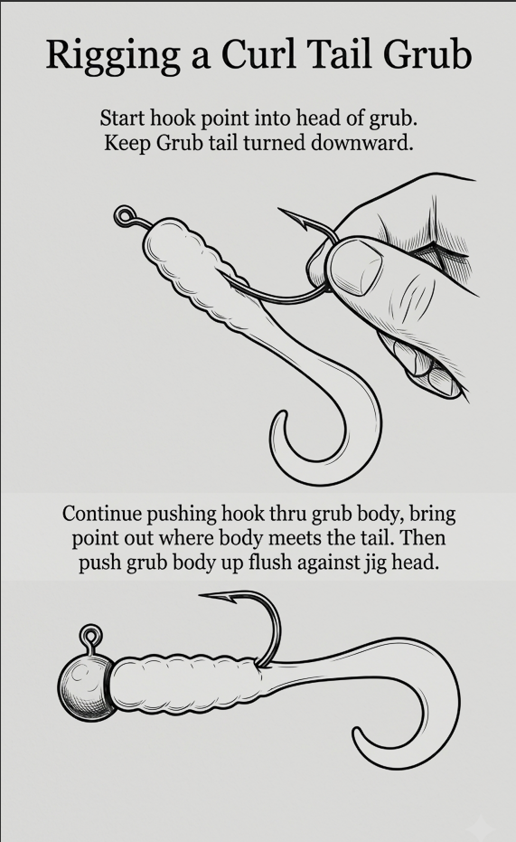
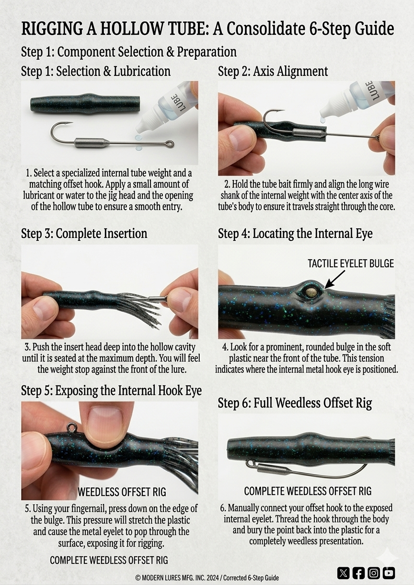

Rigging a Curl Tail Grub
Step 1: Start hook point into head of grub. Keep grub tail turned downward.
Step 2: Continue pushing hook through grub body, bring point out where body meets the tail. Then push grub body up flush against jig head.
Step 2: Continue pushing hook through grub body, bring point out where body meets the tail. Then push grub body up flush against jig head.

Rigging a Hollow Tube
Step 1: Using the tube insert head, start the head into the hollow end of the tube. Moistening the jig head and tube will help.
Step 2: Push the tube insert head as far into the tube as possible — there will be a bulge in the plastic body from the hook eye.
Step 3: Using your fingernail, gently press down on the edge of the hook eye to expose. You are now ready to tie your line.

Tips
When fishing with a curl tail grub, always use the lightest size jig head as possible and still be able to feel your jig. Fish these with a very slow, lift and drop retrieve around boat docks, bridge piers, rock piles, stumps and bushes.
When using tube baits, try fishing them under a bobber. Adjust the depth of your lure to stay just above the brush, or bottom. On windy days, allow the bobber to drift with the waves. On calm days a slight twitch on the line will cause the tube to dance below the bobber.